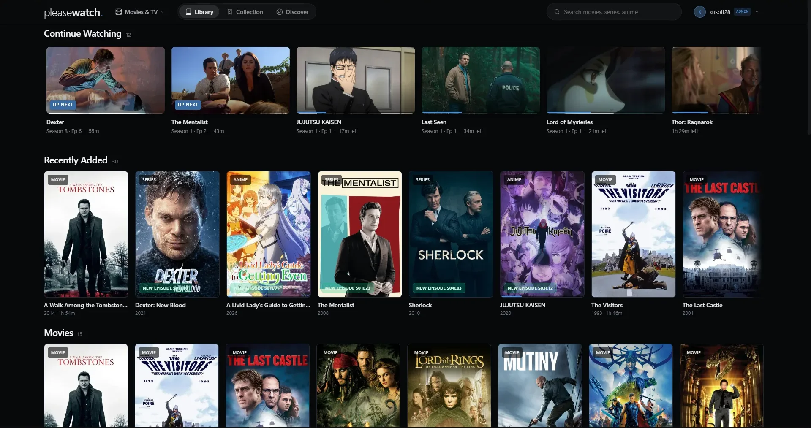
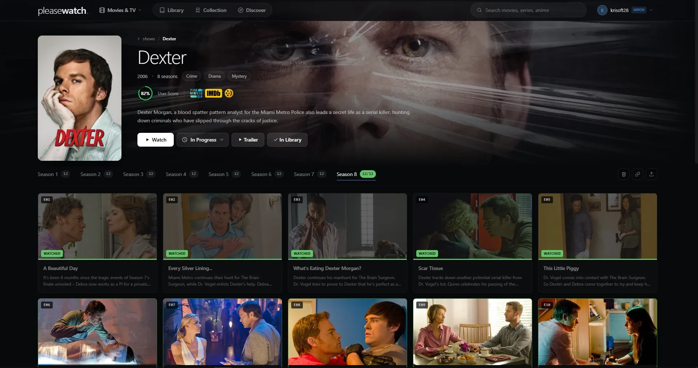

everything it does
One app for movies, TV, anime, manga and books, on a server you run yourself.


watch
- Movie and TV search through TMDB
- Library pages for movies, shows and anime
- Continue watching, watch progress, collections, recommendations and recently added shelves
- Browser video player with an audio and subtitle picker
- Subtitle search, upload and sync
- Skip intro, next episode and clips
- Upload your own video files. Anything without a real video stream is rejected
watch together
- Rooms share the server clock
- Viewers stay within about a quarter second of each other
- Optional mode pauses the room while someone buffers
- Send a title to another user. It lands in their inbox
dual subtitles
- A second subtitle track above the main one
- Hover a word to see its match in the other language
- English, Polish and German
- Click a word to hear it
read
- Epub reader in the browser
- Manga reader
- Page and chapter counts on the shelf
download
- Torrent picker backed by qBittorrent, Jackett, Prowlarr, bitsearch and ext.to through FlareSolverr
- Season packs skip episodes already on disk
- Junk files like .exe are dropped
live
- Live sports board with scores from ESPN. Sources are configured in .env
- TV channels from the public iptv-org lists
- Dead and DRM-protected channels are filtered out
run it
- First-run onboarding for TMDB and the optional download services
- Admin panel for users, pending approvals, downloads, clips, storage, logs, settings, health and a watch leaderboard
- One Rust binary with SQLite. The static frontend is served by the backend
- Docker Compose deployment with Caddy and the download services